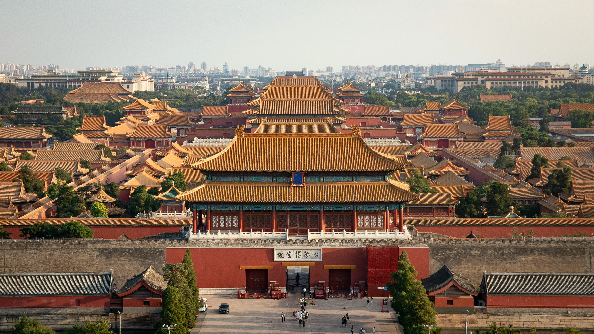

历史 · 建筑
北京故宫
北京 · 东城区红墙、宫门和屋脊，组成一条穿过历史与建筑的路线。
关于故宫
故宫以中轴线为主要空间结构，宫殿、庭院和展览共同呈现传统建筑文化。
除主要宫殿外，门窗、屋脊和院落中的细节也值得放慢脚步观察。
推荐体验
- 沿中轴线了解宫殿布局
- 观察屋顶与门窗的装饰细节
- 选择感兴趣的专题展览

历史 · 建筑
红墙、宫门和屋脊，组成一条穿过历史与建筑的路线。
故宫以中轴线为主要空间结构，宫殿、庭院和展览共同呈现传统建筑文化。
除主要宫殿外，门窗、屋脊和院落中的细节也值得放慢脚步观察。